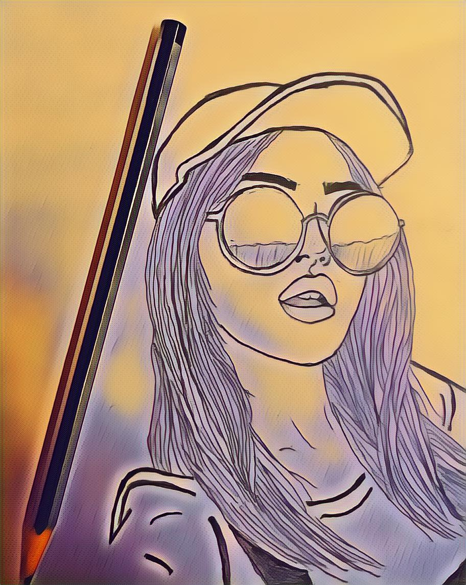
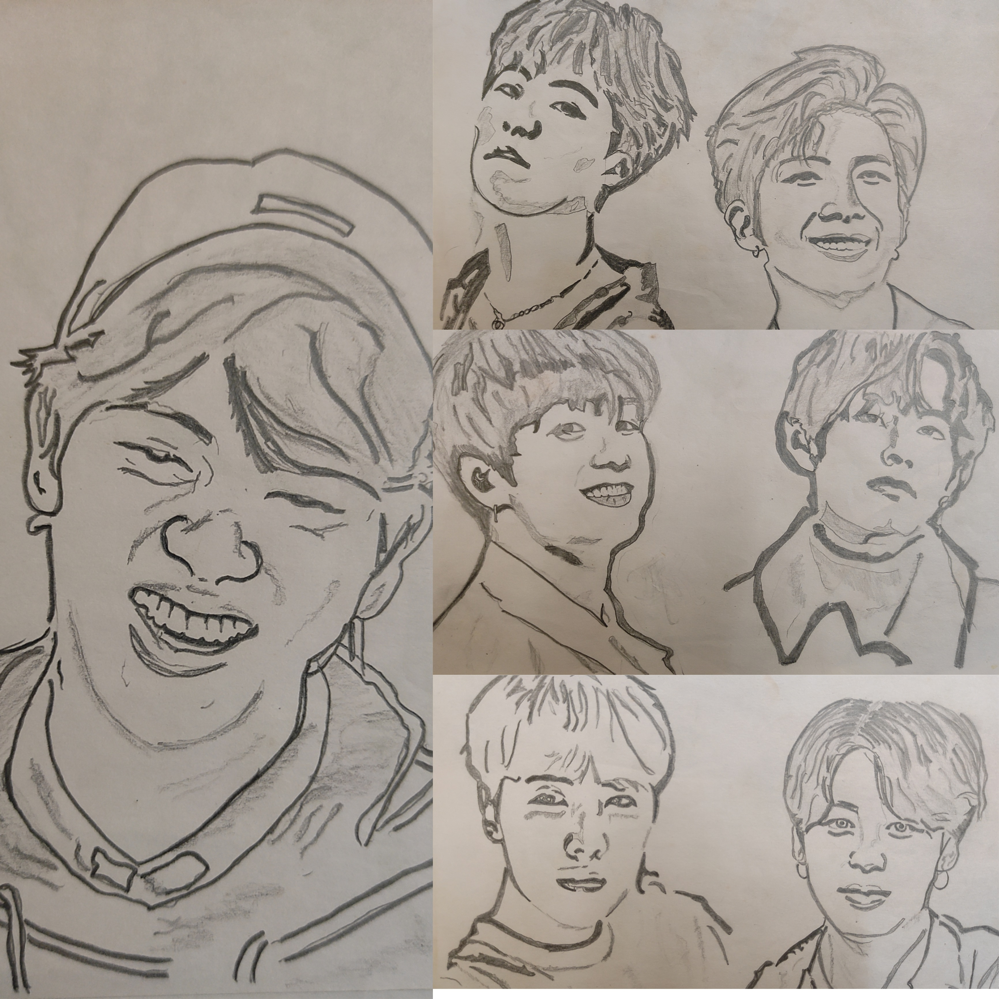
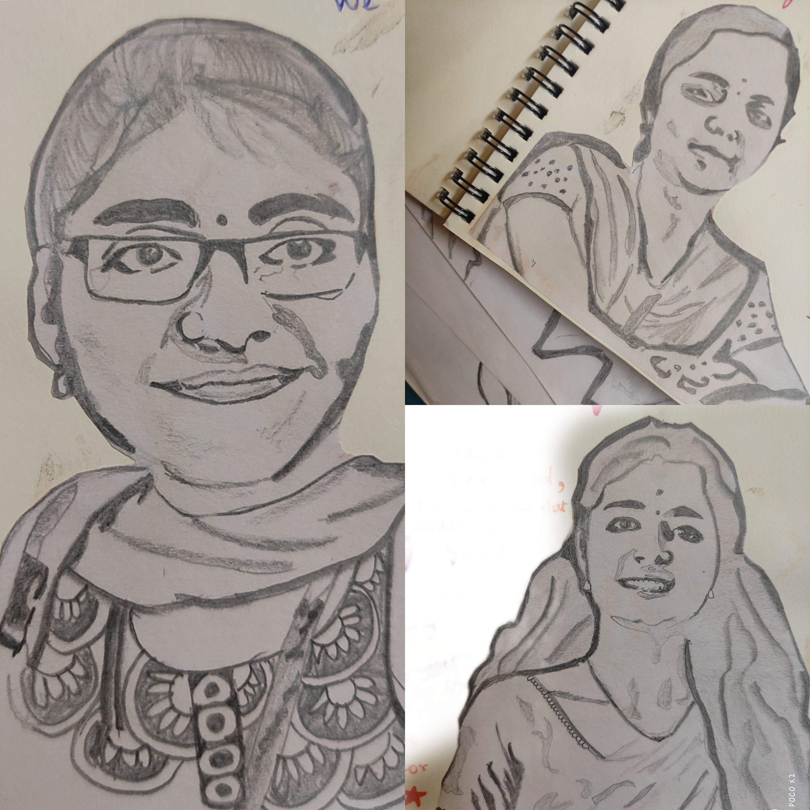
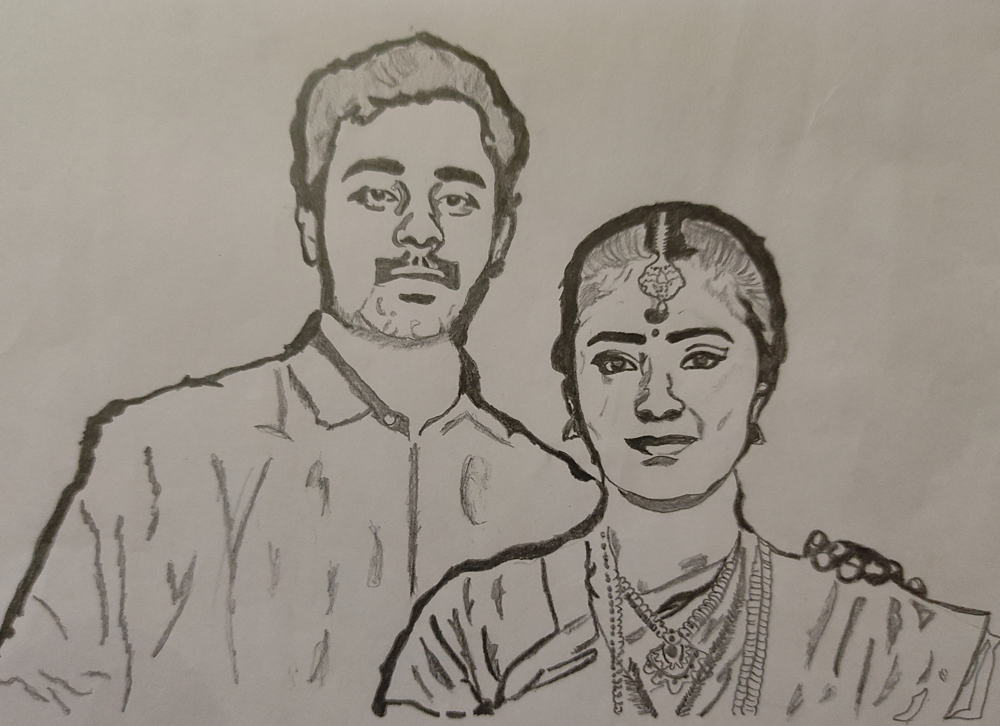
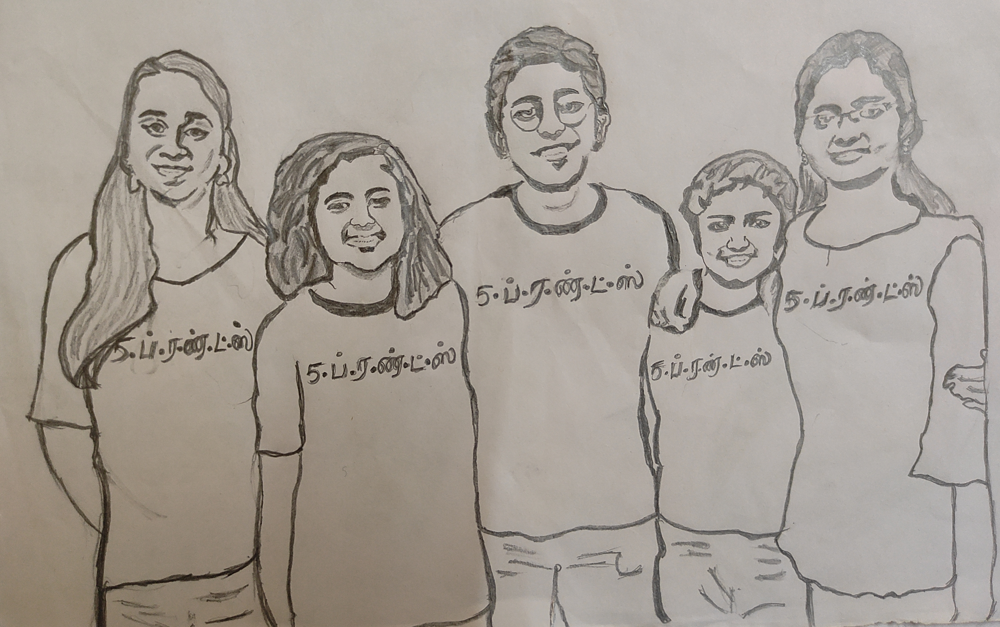
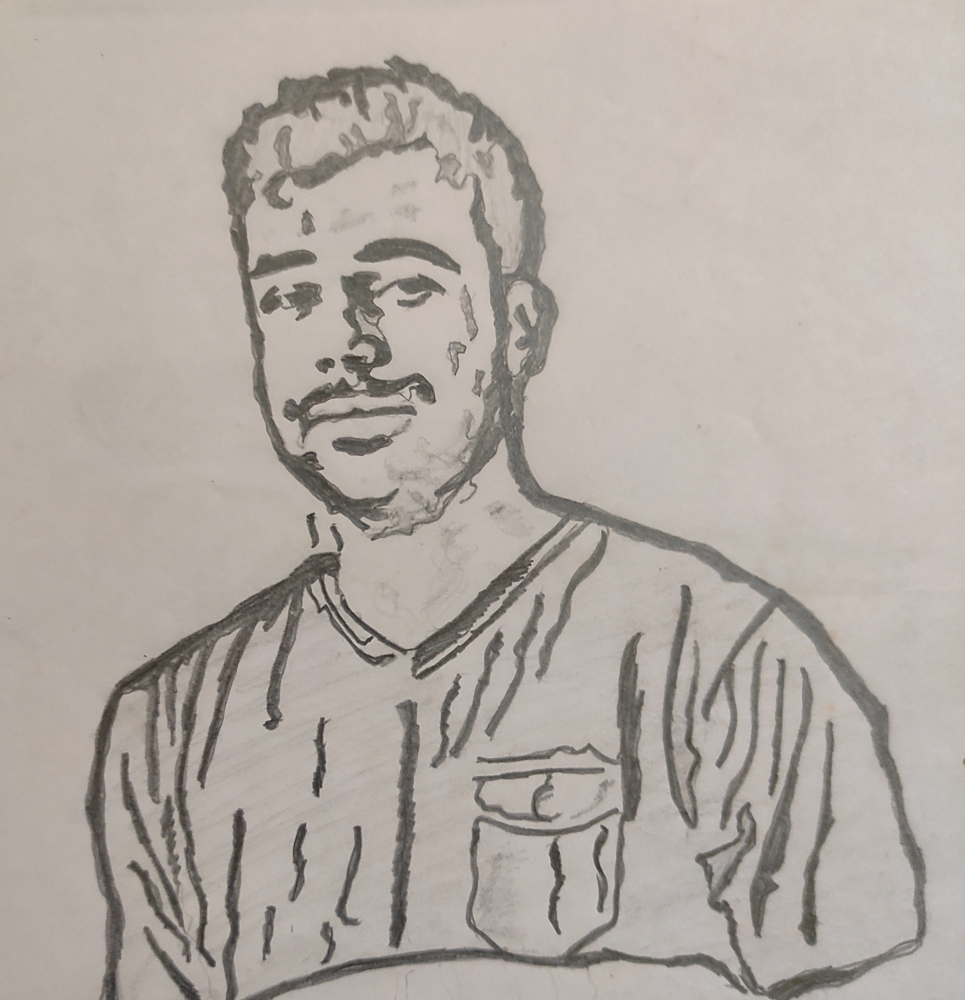
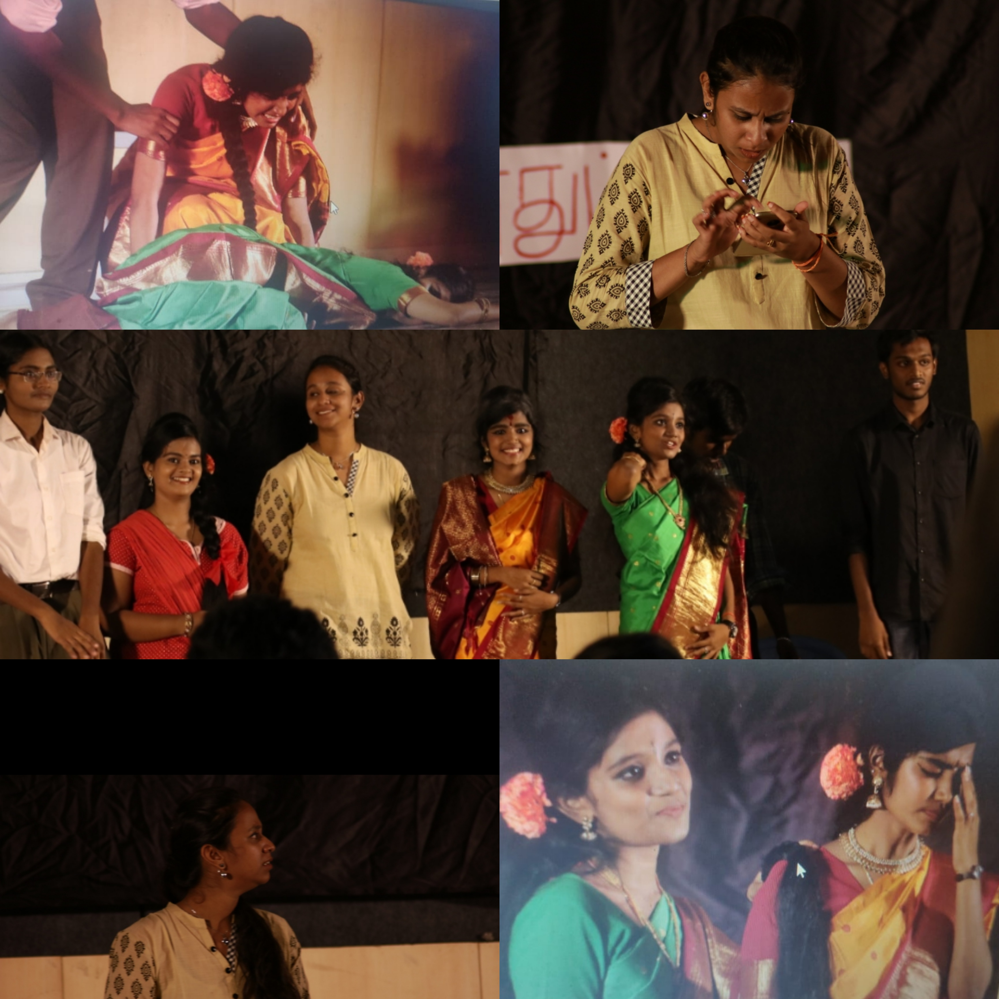

Gallery
Pencil Sketches
As I want to Be!!

Pencil Sketches
The K-Pop boy band BTS

Pencil Sketches
Gifts I gave to my friends for their Birthdays

Pencil Sketches
My Brother and his fiancée

Pencil Sketches
Moments we missed to be togther came true through this sketch

Pencil Sketches
First pencil Sketch I have ever tried

Drama
The drama we played in the final stage in front of Crazy Mohan's drama troupe at college culturals

Dumbc
Final stage of the Cinema event DumbCharades where I'm trying to give the clue of the movie using hand gestures